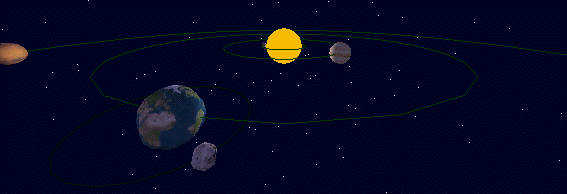

page paul's opengl page paul's opengl page paul's opengl page paul's opengl pag paul's opengl page paul's opengl page paul's opengl page paul's opengl page |
introduction
I posted this page to help
people who fancied trying a bit of OpenGL, but didn't know where to start.
I saw the same questions pop up on the news groups and message boards that I
asked when I first started. I figured that it'd be helpful to take you through
the process, learning by example. This to me seems the best way to learn
the fundamentals of OpenGL quickly.
what this page won't show you is.. how to write the next QuakeIII game, anything to do with BSP trees, oct trees, terrain generation, particle systems, inverse kinematics, quaternion math libraries, skeletal animation, <insert your own fashionable buzz-word here>
what this page will show you is.. well annotated C source that displays core and extended OpenGL functionality clearly and succinctly.
what's new? 11 Aug 01: 5 Mar 01: 31 Jan 01:
Still waiting for my Microsoft
eMbedded Tools SDK. Can't wait to have a play around with WindowsCE... 9 Nov 00:
31 Oct 00:
24 Oct 00:
I've also noticed that Milkshape3D's file format has
been updated, so my object loading code is a little out of date. When I've
got the time I'll upgrade that.
what's ne Additionally, its useful to have a late version of the gl.h file.
Then you can be sure of having all the newest OpenGL extension function pointers
and tokens. Download that [locally]
too.
source
Clicking on a program title
takes you to the description and screenshot for that program. The abridged
source will be present - and if we introduce a new opengl function, I'll make it
a hyperlink to the relavant opengl manual page.
26
Aug 99
[download]:
The simplest glut program you can create; this opens a window and not much
else. It's a useful starting point though.
I've uploaded a tutorial on using the GLU Tessellator.
[Program11] shows you how to setup these functions, useful for creating
convex and non planar polygons. The page on SDL is almost ready, as
well as some pages devoted to programming languages, their design and
implementation.
Jonas Geduldig pointed out some pointer errors in the latest tga loading code - he also suggested a fix for them. All the affected archives have been updated. If you don't want to re-download all the examples, you can grab it separately from
[here] Thanks again Jonas!
It shouldn't crash when it can't find the .tga file anymore either :)
I'm still here! I haven't been doing too much OpenGL though.
I've been playing with [SDL],
a cross-platform graphics and sound library - I plan to put a few pages up on
that soon. If you have any OpenGL questions please do keep them coming,
especially suggestions for further tutorials... I'll get back to OpenGL
just as soon as I get bored with SDL :)
Changed some stuff around on the site. I've dropped paletted texture
support in my .tga loading code, very few cards seem to support it these days and the code
was getting pretty unmanageable. That means I've 'refocused' program5 - it
just talks about loading real file formats now - you can still load RLE
compressed .tga files though... You can get the latest revised version from [here],
or re-download programs 5 - 10.
Posted [program10], it deals with hardware
multitexturing and vertex arrays. I also finished re-writing the .tga
loader. There are some issues with compressed textures on the Radeon, so
I'd appreciate feedback for other cards that support compressed textures.
I've bought a new video card! I got the 64 meg version of the ATI
Radeon. Anyway, this thing is
extension packed so expect an updated multi-texturing tutorial some time
soon. The .tga loader is undergoing another overhaul - large chunks of it
are being rewritten from scratch to accommodate another extension -
ARB_compressed_textures.
,
Borland C++ has been floating around for free on magazine
coverdiscs
for a while now. It's the compiler I use, so all of the source here is geared
toward it. If you don't know how to compile OpenGL programs two tutorials are available:
glut...
Without glut to open
windows for us we'd have to use Win32 code. There are many many
Win32 tutorials on the web if you're interested in that sort of
thing. But let's face it, if you're trying to get your head around OpenGL you
don't want Win32 getting in the way.
The glut32.lib supplied in precompiled form from SGI only has import libraries
for Microsoft compilers. These don't work with Borland, so we have to use a
utility to make our own glut32.lib.
You can download version 3.6 of the .dll and Borland .lib [locally].
Put the glut32.h file in your compiler's "/include/gl" directory. Put
the glut32.lib in a place you can easily remember. I put mine in "/libs"
directory.
other projects.. Okay, so I lied! Like everyone else, I've got plenty of other stuff on the go at the moment, most is unfinished and not worth bothering about yet. As well as the solar system below, I'm working on 'proper' object simulation using multithreaded scene graphs, a quaternion class with a useful set of features and an object loader.

visits since March
2000
Website and content, Paul Groves